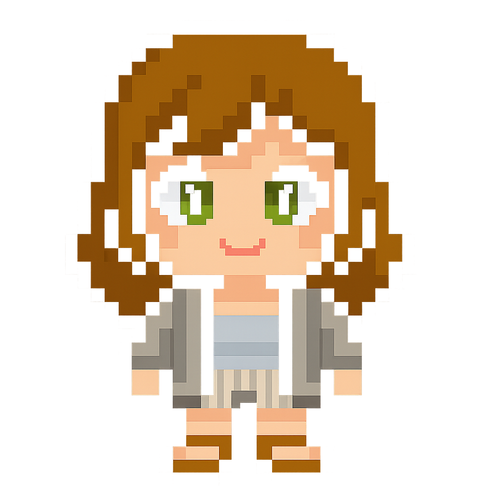
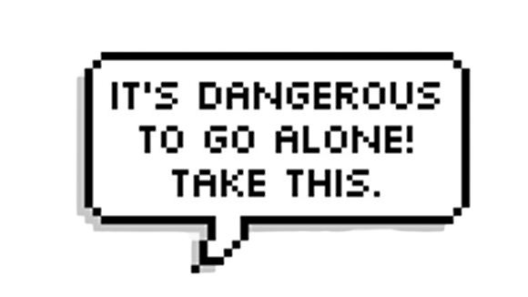

<!DOCTYPE html>
<html lang="en">
<head>
  <meta charset="UTF-8" />
  <script src="https://unpkg.com/lucide@latest/dist/umd/lucide.js"></script>
  <meta name="viewport" content="width=device-width, initial-scale=1" />
  <title>Footer Component</title>
  <link rel="icon" type="image/png" href="HenLogo.png">
  <style>
    @import url('https://fonts.googleapis.com/css2?family=Montserrat:wght@300;400;500;600&display=swap');

    :root{
      --fg:#f1faee;
      --outline:rgba(168,218,220,0.18);
      --bubbleW:clamp(110px,12vw,180px); /* size of speech bubble */
      --bubbleRight:-100%;               /* horizontal offset from Hen's right edge */
      --bubbleTop:-48%;                 /* vertical offset above Hen's top edge */
    }

    *{box-sizing:border-box}
    html,body{margin:0;padding:0;color:var(--fg);font-family:'Montserrat',system-ui,-apple-system,Segoe UI,Roboto,Inter,Ubuntu,'Helvetica Neue',Arial,sans-serif}

    /* Wrapper */
    footer.hen-footer{
      width:100%;
      display:grid;
      place-items:center;
      gap:1rem;
      padding:1.25rem 1rem 1.75rem;
      border-top:1px solid var(--outline);
      background:#0f1419;
    }

    /* Scene */
    .dangerous-scene{
      position:relative;
      width:min(980px,96%);
      min-height:180px;
      display:flex;
      align-items:flex-end;
      justify-content:center;
      gap:clamp(12px,4vw,40px);
      padding:clamp(10px,3vw,20px);
      isolation:isolate;
    }

    .hen-sprite,.sword-btn img,.bubble-float{image-rendering:pixelated;image-rendering:crisp-edges}

    /* Hen (anchor for bubble) */
    .hen-wrap{position:relative;display:inline-block;flex:0 0 auto}
    .hen-sprite{width:clamp(42px,13vw,110px);height:auto;filter:drop-shadow(0 2px 0 rgba(0,0,0,.2))}

    /* Small bubble above-right of Hen */
    .bubble-float{
      position:absolute;
      width:var(--bubbleW);
      right:var(--bubbleRight);
      top:var(--bubbleTop);
      transform:rotate(-2deg);
      pointer-events:none; /* decorative only */
      filter:drop-shadow(0 3px 0 rgba(0,0,0,.25)) drop-shadow(0 8px 14px rgba(69,123,157,.35));
    }

    /* Sword button to the right */
    .sword-btn{background:transparent;border:0;padding:0;margin:0;cursor:pointer;outline:none;translate:-35px;translateY:-50px}
    .sword-btn img{width:clamp(32px,4vw,80px);height:50%;display:block;filter:drop-shadow(0 4px 12px rgba(69,123,157,.45));transition:transform 160ms ease,filter 160ms ease}
    .sword-btn:hover img,.sword-btn:focus-visible img{transform:translateY(-4px) scale(1.05);filter:drop-shadow(0 6px 16px rgba(42,157,143,.55))}

    /* Credit */
    .credit{text-align:center;opacity:.8;font-size:.95rem;margin:.25rem 0 0}

    @media (max-width:640px){
      :root{--bubbleW:clamp(110px,28vw,180px);--bubbleRight:-6%;--bubbleTop:-24%}
      .dangerous-scene{min-height:140px}
    }

    /* hero-style socials */
    .social-links{display:flex;gap:1.5rem;align-items:center;justify-content:center;margin-top:.75rem}
    .social-icon{
      width:50px;height:50px;border-radius:50%;
      background:rgba(168,218,220,0.1);
      border:2px solid rgba(168,218,220,0.3);
      display:flex;align-items:center;justify-content:center;
      position:relative;overflow:hidden;transition:all .3s ease;backdrop-filter:blur(10px)
    }
    .social-icon::before{
      content:'';position:absolute;top:0;left:-100%;width:100%;height:100%;
      background:linear-gradient(90deg,transparent,rgba(168,218,220,.2),transparent);
      transition:left .5s
    }
    .social-icon:hover{transform:translateY(-3px) scale(1.05);border-color:rgba(168,218,220,.6);background:rgba(168,218,220,.2);box-shadow:0 8px 25px rgba(168,218,220,.3)}
    .social-icon:hover::before{left:100%}
    .social-icon svg{width:22px;height:22px;stroke:#a8dadc;transition:all .3s ease;z-index:1}
    .social-icon:hover svg{stroke:#f1faee;transform:scale(1.1)}
    .social-tooltip{
      position:absolute;bottom:120%;left:50%;transform:translateX(-50%);
      background:rgba(15,20,25,.98);color:#f1faee;padding:.5rem 1rem;border-radius:6px;
      font-size:.8rem;white-space:nowrap;opacity:0;pointer-events:none;transition:all .3s ease;
      border:1px solid rgba(168,218,220,.4);backdrop-filter:blur(15px);z-index:100;font-weight:500
    }
    .social-icon:hover .social-tooltip{opacity:1;transform:translateX(-50%) translateY(-5px)}


  </style>
</head>
<body>
  <footer class="hen-footer" role="contentinfo">
    <div class="dangerous-scene" aria-label="It’s dangerous to go alone — take this! (visual only)">
      <!-- Hen (left) with floating speech bubble above-right -->
      <div class="hen-wrap">
        
        
      </div>

      <!-- Sword (right) opens resume popup like the nav) -->
      <button class="sword-btn" aria-label="Open resume" title="Open resume" onclick="openResumePopup && openResumePopup()">
        
      </button>
    </div>

      <!-- Socials copied from index -->
    <div class="contact-buttons">
      <!-- paste your exact GitHub / LinkedIn / Email buttons from index here -->
        <div class="social-links">
      <div class="social-icon" onclick="window.open('https://www.linkedin.com/in/henriettavanniekerk','_blank')">
        <i data-lucide="linkedin"></i><div class="social-tooltip">LinkedIn</div>
      </div>
      <div class="social-icon" onclick="window.open('https://github.com/henliz','_blank')">
        <i data-lucide="github"></i><div class="social-tooltip">GitHub</div>
      </div>
      <div class="social-icon" onclick="window.open('mailto:henrietta@skrimp.ai','_blank')">
        <i data-lucide="mail"></i><div class="social-tooltip">Email</div>
      </div>
    </div>

    </div>


    <p class="credit">built by Hen with lots of ❤ and copious amounts of ☕</p>
  </footer>
</body>
</html>
